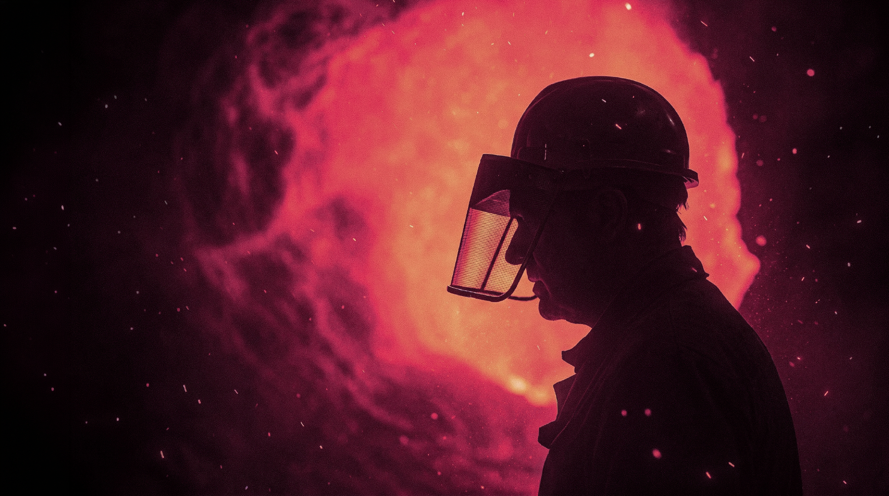

Engineering the possible / 2026
Make
weight
work.
Steel engineered for the exact point where a concept becomes a structure.
A / billet input
B / rebar output
Scroll to deconstruct ↓
The UISTEEL equation
Material
+ method
= momentum.
Every system starts with a structure that can be trusted.
Material selector
Choose the
force profile.
Move between the properties your project requires.
B500
high ductility
Yield strengthDuctilityWeldabilityTraceabilityhigh ductility
01 / REINFORCEMENT500
MPa
MPa
Designed to absorb motion, carry load and preserve the integrity of ambitious structural systems.
Request datasheet
From material to landmark
The unseen
author of
architecture.
In the most demanding construction programs, the material is not an afterthought. It is the reason the idea can stand.
Proof ledger / verified capability
0production
checks / batch
checks / batch
0% documented
traceability
traceability
0day delivery
coordination
coordination
Start with certainty